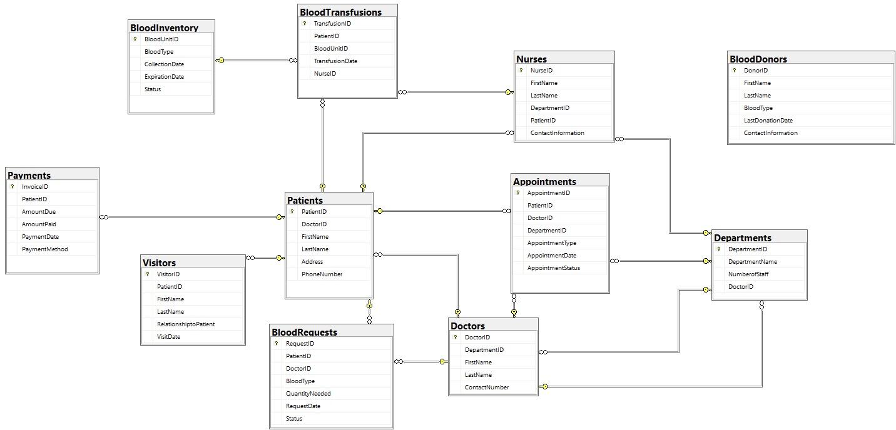

A full-stack SQL project — from schema design through ten advanced queries — for a fictional hospital system that unifies patient care, staff management, and a specialized blood bank into one relational database.
Built with teammates Arusha Rai Kishan Rai and Andre Claudio. This page focuses on the database design and query logic I contributed to and can walk through in detail.
Most hospital-database course projects stop at patients, doctors, and appointments. Our brief was broader: design a system for a fictional "Ivy Medical Center" that also runs a functioning blood bank — inventory, donors, requests, and transfusions — as a first-class part of the schema, not a bolt-on. That meant the database had to support two very different kinds of correctness at once: routine operational data (scheduling, billing, staffing) and safety-critical data (blood type matching, unit availability, transfusion timing), both governed by the same referential-integrity rules.
Four stages, moving from schema design through to advanced query engineering — each one building on constraints established in the last.
Mapped out ten entities — Departments, Doctors, Nurses, Patients, Visitors, Appointments, Payments, and the four blood-bank tables — and defined primary/foreign key relationships between them (e.g. DoctorID as a foreign key in Appointments).
Wrote the full DDL (CREATE DATABASE, CREATE TABLE), populated every table with INSERT INTO, then used ALTER TABLE and UPDATE to refine structure and correct records — verifying population table by table.
Developed ten advanced queries combining inner/left joins, correlated subqueries, GROUPING SETS, CASE logic, UNION, EXISTS, and string/date operations to answer real operational questions.
Researched three comparable hospital database projects — on GitHub, in a peer-reviewed journal, and on ResearchGate — to see how our design and query choices compared to established practice.

Two queries best illustrate the range of the project — one turns raw joins into a decision-ready operational metric, the other automates a safety-critical status update instead of leaving it to manual review.
Uses LEFT JOIN rather than INNER JOIN so departments with no doctors or patients still appear in the report with a ratio of zero, instead of silently disappearing from the results.
SELECT
d.DepartmentName,
d.NumberOfStaff,
COUNT(DISTINCT p.PatientID) AS TotalPatients,
ROUND(COUNT(DISTINCT p.PatientID) * 1.0
/ d.NumberOfStaff, 2) AS PatientToStaffRatio
FROM Departments d
LEFT JOIN Doctors doc
ON d.DepartmentID = doc.DepartmentID
LEFT JOIN Patients p
ON doc.DoctorID = p.DoctorID
GROUP BY d.DepartmentName, d.NumberOfStaff
ORDER BY TotalPatients DESC;A subquery totals available units by blood type; the outer UPDATE flips any pending request to "Fulfilled" only if inventory can actually cover the amount needed — no manual inventory check required.
UPDATE br
SET br.Status = 'Fulfilled'
FROM BloodRequests br
JOIN (
SELECT BloodType,
SUM(CASE WHEN Status = 'Available'
THEN 1 ELSE 0 END) AS AvailableUnits
FROM BloodInventory
GROUP BY BloodType
) bi ON br.BloodType = bi.BloodType
WHERE br.Status = 'Pending'
AND bi.AvailableUnits >= br.QuantityNeeded;
SELECT * FROM BloodRequests;As part of the project, we researched three existing hospital database systems to check our design against established practice:
What this project changes about how I'd approach building or advising on a data system in a business setting.
Primary/foreign key constraints aren't paperwork — in a system like a blood bank, a broken link between a request and actual inventory isn't a data-quality footnote, it's a patient-safety gap. Any system I design gets the same scrutiny on its relationships as on its reports.
Query 10 doesn't just flag low inventory — it resolves the status itself, the moment conditions are met. When advising on operational systems, I look for the difference between a query that describes a problem and one that closes the loop on it.
Defaulting to LEFT JOIN in the departmental summary (Query 7) kept zero-activity departments visible instead of dropping them. It's a small choice with a real consequence: an INNER JOIN there would have made under-resourced departments invisible in exactly the report meant to surface them.